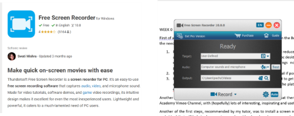
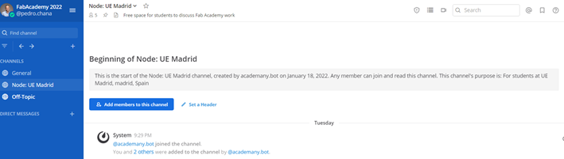

SHORTCUTS AND EXTRAS
Here you can find extra documentation and some useful commands that I had to use to solve all the issues, errors and disasters that, don´t know why, happen quiten often!
Getting started at Week 0
First of all, before even getting into any of the Fab Academy material from the Bootcamp, I had the need to prepare my laptop for what it was going to come:
- Preparing Fablab.io and Gitlab accounts wasn´t difficult. It was all reduced to managing a new password and creating shortcuts on your web browsers or pc desktop, depending on your preferences, once you received your account settings notification and password.
- It´s preferable, if possible, to use a personal email, instead of an institutional one.
- It´s also recommended to install Mattermost app, it’s a space where students can discuss, with other student´s and instructors, about Fab Academy work, and if you want to get rid of multiple accounts and passwords, you can permit the access to most of the platforms through Github.
- Another interesting information I’ve also gathered in these first days is that there are (hopefully) lots of Fab Academy interesting, inspirational and useful videos on Vimeo Channel. In my case I created in Vimeo a personal account, as it seems like it might be a useful platform also for uploading some of the videos used in your personal Fab Academy portfolio.
- Regarding video, screen and audio recording, it´s important that everything is in English, as it’s the Fab Academy “official” language. So, take time to change the language settings of all the programs, apps and platforms you´re going to use.
- Another of the first steps, recommended by my local instructor Alberto, was to install a screen recorder (audio and video) that will help to document properly as "you go". In my case, y downloaded from Softonic the app Free Screen Recorder: 
- Document as you go. (Don´t underestimate the power of these 4 words!)
- Time management. I´m not the addecuate to teach you lessons about this concept...
- Spiral development.
- Another of the tasks that I´m taking care of this “first” week is to research about past pupils experience, final projects and blogs so they can give me a bigger and birds eye view of everything that is going to take place in a few days. I encourage you to have a look to what other past Fab Academy Student´s did.

All these settings didn´t take too much time to do, and as it looks like I’m going to use them every day for the next 5 months. in a couple of days they won´t have any secrets for me!
I´ve been doing these first steps at the same time the bootcamp week started. We could say that the aim of the Bootcamp is to slowly get into the rhythm that the Fab Academy course is going to have, and prepare yourself for a rocket blastoff start. You´ll have the opportunity to meet Neil Gershenfeld for the first time, and you´ll probably hear three concepts that will follow you.. forever¿?
There´s no need to say that attending the students bootcamp sessions is mandatory, even do you can feel a little bit overwhelmed by the topics and the mastery of the concepts showed by the Fab Academy instructors. But in the other hand you gain a community of incredible students and instructors. Personally, I´ve got a beginner level in most of the topics that I´ll have to work, as you can se in my personal bio, but I´m really excited to see how much my fabrication skills and digital competences can improve in the next months.
Useful Gitlab and HTML commands
Here you have some of the most useful commands i´ve had to use during the first week:
Gitlab useful commands
| Command | What does it do/ Useful for or what to do with it.. |
|---|---|
| git.config --global user.name"name" | Include same name as in gitlab.fabcloud account. |
| git config --global user.email"email" | Same email as in gitlab.fabcloud. account. |
| ssh-keygen -t rsa -c"user.email" | To create a Key in Windowsx64. |
| cat ~/-shh/id_rsa.pub | To check if you have a SSH Key. |
| git clone + SSH Key | To clone your repository. |
| cd + name of path | To access through fodlers. |
| ls | lists the folder content. |
| git status | Overview of my repository. |
| cat (FILE) | Displays the content of a textfile. |
| pwd | Shows current directory. |
| vi (FILE) | To open the file content. |
| vim (FILE) Modifies the selected file | Same email as in gitlab.fabcloud. account. |
| rm (FILE) | Deletes permanently a file. |
| rm -r (DIRECTORY) | Deletes permanently a directory and all of its content. |
| git add (FILE) | To add changes |
| git add . | To add changes, of all the documents of the directory. |
| git commit -m"ADD A TEXT" | To commit the changes + "a description of them". |
| du -sh * | Informs of disk usage. |
| du -sh * | sort -n | Sorts file by size. |
| git log | Shows all the commits. |
| git push | To push commits to server. |
| git restore (FILE) | Restores changes in a file. |
| git restore --stage(FILE) | to unstage a commit |
| git pull | to pull down the changes in server. |
| git reflog | Shows all HEAD@ registers. |
| git reset HEAD@(index) | to erasea specific HEAD registry |
And in case of emergency: Dangit, Git!
HTML useful commands
| Command | What does it do/ Useful for or what to do with it.. |
|---|---|
| h1, h2, h3,... | headings. |
| p | paragraph text. |
| b, i, u, br | b=bold, i=italicied, u=underlined, br=break in text |
| span | span= to color a part of the text |
| hr | defines a thematic break (horizontal rule). |
| ol, ul, li | ol=ordered lists, ul=unordered lists, li=lists of elements. |
| img scr, alt | img scr""= add image, alt""=for alternative information |
| hyperlink | a=defines link, href""=adds link |
| icons | i class""=to select icon |
| style"" | To select style. |
| download | aTo download a target: download"" + href"location" + title"" |